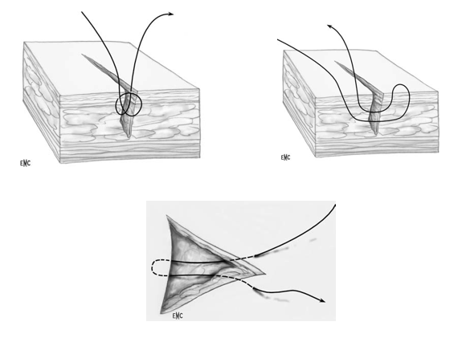

Une suture (du latin sutura ou suere, coudre) est un acte chirurgical consistant à rétablir la continuité d’un tissu ou d’un organe divisé, par une couture et, par extension, au moyen de tout autre procédé. Le terme de « suture » désigne également le dispositif médical (le matériel) permettant la réalisation de cet acte. Il s’agit d’un fil stérile, monté sur une aiguille, destiné à suturer.
| Indications | Contre-indications |
|---|---|
| • Plaie non infectée, sans corps étranger.
• Les plaies complexes, avec lésions internes ou douteuses sont à explorer au bloc opératoire. |
• Présence de corps étranger sans évacuation.
• Infection locale non traitée. |
Les fils chirurgicaux peuvent être classés selon plusieurs types de critères :
– selon leur structure : monofilaments, fils tressés, fils câblés ou fils gainés ;
– résorbabilité ou non résorbabilité ;
– selon leur origine naturelle ou synthétique.
Les monofilaments non résorbables sont le plus souvent employés pour les plans superficiels, alors que les fils tressés résorbables sont le plus souvent employés pour le plan profond. Il existe des fils résorbables à résorption rapide, qui ne nécessitent pas d’être enlevés lorsqu’ils sont utilisés en superficie. Ils sont donc appréciés pour suturer la peau de certaines régions (périnée, main, pied, muqueuse buccale ou nasale) et/ou de certains terrains (enfants). [85]
Les fils utilisés aux urgences sont tous synthétiques.
| Taille et type de fil de suture | Localisation |
|---|---|
| 3-0 ou 4-0 | Tronc |
| 4-0 ou 5-0 | Membres, extrémités et crâne |
| 5-0 ou 6-0 (fil non résorbable) | Face |
| 3-0 ou 4-0 (fil résorbable) | Muscle, selon saignement et profondeur |
Les aiguilles peuvent être classées selon plusieurs types de critères :
| La pointe | La forme de la pointe conditionne le pouvoir de pénétration d’une aiguille. Ainsi, plus le tissu à suturer est dense, élastique et résistant, comme la peau par exemple, plus on recherchera une pointe aux arêtes tranchantes. |
| Le corps | Il peut présenter à la coupe des formes variées. La plus classique est la forme ronde. |
| La courbure | Les courbures des aiguilles utilisées en chirurgie sont exprimées en 1/8e de cercle : 2/8 ou 1/4 – 3/8 – 4/8 ou ½ cercle, 5/8 et aiguille droite. |
| La longueur et la résistance | L’épaisseur du tissu à traverser conditionne la longueur de l’aiguille à utiliser. En chirurgie plastique par exemple, les longueurs vont de 7 à 30 mm |
Les seules aiguilles utilisables pour suturer la peau sont les aiguilles à section triangulaire (par opposition à la section ronde, utilisée en chirurgie viscérale). Les aiguilles droites n’ont que de très rares indications en chirurgie plastique, ce sont les aiguilles courbes qui sont en règle utilisées, avec un choix entre les formes 3/8e de cercle et 4/8e de cercle.
Point le plus simple à réaliser, il peut se faire au fil résorbable ou non.
Il charge l’ensemble du derme et de l’épiderme. La distance entre le point d’entrée et la berge est équivalente à la profondeur du point. L’espacement entre deux points doit respecter la règle des carrés, c’est-à-dire que la distance entre deux points est identique à celle située entre les deux orifices d’entrée du point (Fig. 10). Le noeud est descendu sur la plaie pour une tension symétrique, puis est coulissé surun côté (toujours le même).
Il s’agit d’une variété de points séparés, dont la qualité principale est l’invisibilité, les deux caractéristiques essentielles étant : la difficulté de sa réalisation et l’utilisation obligatoire de fil résorbable, le point étant en effet impossible à retirer sans rouvrir la plaie.
Commencer par le fond de la plaie, piquer une des berges de la profondeur vers la surface sans ressortir, partir vers la berge opposée et faire de même en sens inverse. Nouer au fond de la plaie sans trop serrer puis enfouir le nœud.
Il s’agit d’un double passage sur une même ligne perpendiculaire à la plaie. Un premier passage se fait à distance, puis, après une sortie et une réentrée sur l’autre berge, le fil est sorti entre le point d’entrée et la berge. Les deux passages prennent le derme et l’épiderme. Il faut être symétrique sur les deux passages, et la distance entre l’entrée et la sortie ne doit pas être grande sous peine de plisser la peau.
L’entrée se fait légèrement décalée de la position finale de la pointe sur le bord opposé, puis le fil est passé dans le derme de la partie libre, au même niveau que dans la berge initiale, sans ressortir puis revient pour être symétrique au fil de départ par rapport à la position finale. Ainsi, la pointe vient se loger dans sa position, laissant deux plaies linéaires. La distance entre l’entrée et la sortie du fil ne doit pas être trop importante pour éviter tout plissement cutané.
Il s’agit de points séparés mais sans nœud et en gardant le même fil. La règle des carrés s’applique également.
En pratique, il s’utilise pour les plans profonds car les résultats esthétiques en sont médiocres
L’aiguille est rentrée à la pointe de la plaie puis le fil est passé dans le derme comme un surjet simple, mais en ne ressortant que sur l’autre pointe. La tension symétrique sur les deux fils permet l’affrontement des berges. Cette tension est maintenue notamment par bouclette, par un nœud en pont au-dessus de la plaie ou par application de suture adhésive.
Seul le fil monobrin non résorbable doit être utilisé.
| Type de suture | Avantages | Inconvénients | Indications |
| Points simples | • réalisation simple mais exigeante ;
• la suture n’est pas étanche (utilité pour une plaie souillée). |
-moins esthétique qu’un surjet par exemple ;
-parfois de réalisation fastidieuse (plaie de grande taille). |
réalisable pour toutes les plaies, |
| Points inversés |
-ceux des points séparés (cf. supra le point simple)
– esthétique au mieux conservée. |
• difficile à réaliser ;
• très fastidieux sur une plaie de taille conséquente. |
en principe, applicable à toutes localisations, c’est le point des plans profonds par excellence. |
| Point de Blair-Donati | • il permet de réaliser une suture même si celle-ci est mise en tension
• il affronte correctement les berges de la plaie ; • il permet un contrôle de l’hémostase dans certains cas particuliers. |
-il ne peut pas être utilisé pour toutes les localisations (proscrit au visage) ;
• sa réalisation est plus délicate ; • il est peu esthétique ; • trop serré, il peut être ischémiant. |
• plaies en tension (coude, genou) ;
• plaies du cuir chevelu. |
| Points d’angle | • réalisation aisée ;
• permet d’éviter des points provisoires ; • prépare efficacement la suture des côtés par réalignement des berges; • peut se réaliser au fil résorbable. |
nécessite une épaisseur de tissu suffisante pour le passage du fil. | Une plaie présentant un lambeau triangulaire en association avec des points simples. [6] |
| Surjet simple | • c’est la suture la plus rapide à réaliser ;
• il convient pour les fils résorbables ou non. |
• il ne s’agit pas d’une suture esthétique, d’autant plus que les passages sont trop serrés (échelle de perroquet), véritable lardage de la peau ;
• l’affrontement n’est pas très bon. |
• il conserve une grande utilité lors de sutures de la muqueuse buccale.
• il peut conserver son utilité dans les plaies du cuir chevelu ; |
| Surjet intradermique |
• suture esthétique par excellence ;
• rapide à réaliser ; • nonischémiante ; |
• suture difficile à faire;
• risque de lâchage de la suture si les nœuds sont mal assurés ; • imperméabilité, à proscrire sur une plaie septique en l’absence de drainage. |
réalisable en toute localisation (la limite vient en fait de l’absence d’intérêt, comme au niveau du cuir chevelu) |
• Une plaie associée à des lésions des éléments nobles.
• Une plaie dont l’exploration ne peut être complète ou laisse persister un doute.
• Une plaie souillée à haut risque infectieux.
• Une plaie datant de plus de 24 heures.
• Une plaie par morsure sans préjudice esthétique, profonde ou examinée à plus de 24 heures.
Comme toute technique chirurgicale, la suture cutanée comporte des risques de complications. En se limitant aux complications plus spécifiques de la suture elle-même, on peut citer : [85]
• Désunion, lâchage précoce des sutures ;
• Infection, suppuration : localisée sur un fil sous-cutané ou généralisée à l’ensemble de la plaie ;
• Hémorragie, hématome ;
• Nécrose cutanée par traction excessive ;
• Botriomycome survenant sur une partie désunie ;
• Complications des bandelettes adhésives et/ou des pansements (allergie à la colle, phlyctène par traction tangentielle excessive) ;
• Modifications de la sensibilité des berges ;
• Cicatrices : imprévisibles, évolutives et aléatoires ; même avec une technique de suture parfaite, la cicatrice peut être élargie, en relief hypertrophique, ou pigmentée. Le chirurgien fait la suture et le patient fait la cicatrice.
Une plaie n’est simple qu’a posteriori. En effet, une plaie minime et banale d’aspect peut masquer une lésion tendineuse ou vasculaire. Cet adage justifie que la démarche diagnostique soit systématique, respectant l’ordre chronologique suivant : [86]
• Interrogatoire et inspection de la plaie ;
• Recherche d’une lésion profonde par examen clinique (testing tendineux et vasculonerveux pour une plaie de la main) et examens paracliniques
À ce stade, deux situations sont possibles :
- Soit il existe une lésion avérée et la prise en charge est chirurgicale ; le rôle de l’urgentiste est l’alerte et la préparation du patient à ce geste ;
- Soit il n’y a pas d’atteinte avérée et il s’agit alors d’aborder la plaie afin de compléter le bilan lésionnel.
Etape 1 :
Lavage à l’eau et au savon de la zone lésée et l’installation du patient. Pour ce faire, quelle que soit la localisation de la plaie, le patient doit être dans une situation confortable et dans une pièce permettant l’ensemble de l’exploration et de la réparation cutanée. Les poils et les cheveux, à l’exception des sourcils, doivent être tondus (et non rasés).
Etape 2:La décontamination de la zone lésée et avant tout celle de la peau saine de voisinage, de manière centrifuge. Deux familles d’antiseptiques sont utilisées dans la pratique courante, les dérivés iodés et les ammoniums quaternaires. On procède ensuite au nettoyage de la plaie pour poursuivre l’ablation des corps étrangers, élimination des dépôts de sang coagulé et les parties nécrosées non adhérentes. L’emploi d’eau stérile sous une pression faible est le meilleur moyen.
On peut la réaliser par instillation avec une seringue, par versement direct du flacon dans la plaie, ou par instillation d’un flacon de perfusion muni d’une tubulure. L’utilisation de compresses complète ce lavage mais, n’ayant pas encore pratiqué d’anesthésie, son efficacité reste limitée par la douleur.
Par traction du revêtement cutané permettant l’écartement des berges de la plaie, une première visualisation du fond de la plaie est réalisée. Si elle n’est pas suffisante, une exploration plus complète est nécessaire, imposant la réalisation d’une anesthésie locale ou locorégionale selon la localisation de la plaie et des compétences du praticien.
Etape 3 : L’anesthésie Anesthésie locale : Celle-ci doit être réalisée avec de la lidocaïne à 1 %, non adrénalinée (pour éviter toute ischémie des berges de la plaie). Elle se réalise avec une seringue de 10 ou de 20 ml permettant un meilleur contrôle de l’injection qu’avec une seringue plus petite. L’aiguille doit être la plus fine possible, de 23 ou 25 Gauge (aiguille intradermique ou sous-cutanée). Un test d’aspiration doit être fait avant chacune des injections, qui se font de proche en proche, afin d’éviter un passage vasculaire.
Anesthésie locorégionale : Les contre-indications générales et locales à ce type d’anesthésie doivent être respectées. On doit disposer un matériel adapté, en particulier des aiguilles à biseau court. Elle demande enfin un apprentissage préalable spécifique.
Etape4: L’exploration : Le premier temps de l’exploration est l’hémostase lorsque celle-ci est justifiée. On reprend alors le lavage et, cette fois, le brossage de la lésion doit être effectué. Enfin, le parage des tissus nécrosés ou menaçant de le devenir est finalisé. Il faut garder à l’esprit que le tissu adipeux exposé à l’air nécrose très facilement. Ainsi, le parage doit être large sur le tissu adipeux et économe sur la peau. Il est alors possible de visualiser les structures profondes, comme un tendon lors d’une plaie de main. Ce contrôle visuel doit être réalisé en mobilisant les doigts afin de faire mobiliser en particulier les tendons, dans la totalité de leur course visible. À ce stade, la constatation d’une lésion profonde, même partielle, impose une prise en charge au bloc opératoire.
Le minimum à avoir à disposition :
– 1 porte-aiguille ;
– 1 paire de ciseaux à fil ;
– 1 pincette atraumatique.
Le porte-aiguille doit être tenu sans crispation mais d’une main ferme, le pouce et l’annulaire dans les œillets de la pince, l’index en appui sur les branches. Le mouvement à imprimer à la pince est un mouvement mixte, à la fois de translation permettant la pénétration de l’aiguille, et en même temps un mouvement de rotation du porte-aiguille sur son axe, créé soit par prono-supination du poignet, soit par rotation de la pince dans la main. La peau ne doit pas être blessée par la pincette sous peine de cicatrice disgracieuse voire de nécrose cutanée
La pince prend le tissu à suturer et le présente dans un mouvement d’élévation et de traction. L’aiguille est positionnée dans sa convexité et le mouvement de pénétration consiste en une rotation à 180 ° de l’aiguille. Une fois repositionnée sur le porte-aiguille, la même manoeuvre est pratiquée sur la berge opposée. Ainsi est parfaitement maîtrisé le trajet de l’aiguille, y compris sur les autres plans, évitant tout « accident ».
Les nœuds sont faits au porte-aiguille ou à la main. Il s’agit de nœuds plats, c’est-à-dire de deux nœuds simples inversés, seuls garants d’un blocage efficace. Il est donc important de respecter cette alternance au fur et à mesure, plus que d’additionner un grand nombre de nœuds. Ceux-ci sont au moins au nombre de cinq, mais une tension importante ou un fil monobrin incitent à faire plus de nœuds.
• Immobilisation : Lors d’une tension forte, il peut être utile d’immobiliser quelques jours le mouvement responsable de cette tension.
• Antalgique : La suture est douloureuse, surtout en cas de tension forte et quand le patient mobilise ce secteur.
• Antibiothérapie : Il faut se rappeler qu’une plaie récente n’est pas infectée mais contaminée par une flore saprophyte utile à la cicatrisation. Une antibiothérapie peut casser le bactériocycle nécessaire à la Cicatrisation. En revanche, l’apparition de stigmates régionaux ou généraux d’infection, comme une lymphangite, des adénopathies ou de la fièvre, doit faire pratiquer un prélèvement et faire débuter une antibiothérapie. Pour le cas particulier de l’inoculation par morsure, l’antibiothérapie préventive se justifie si le patient est immunodéprimé, que le mammifère mordeur est un humain, que la morsure atteint le derme profond et qu’elle siège sur le cou, les mains, le visage ou le périnée. Cette antibiothérapie est de 5 jours si la plaie est propre, 15 jours si elle paraît déjà infectée.
• Anti-inflammatoires : Ils sont contre-indiqués du fait de leur action propre interagissant avec les phénomènes de la cicatrisation et qui, de plus, favorise la colonisation bactérienne.
• Prévention de la rage/ prévention du tétanos/ Trithérapie antirétrovirale selon le mécanisme lésionnel
• Veuillez consulter votre médecin traitant si un de ces signes d’infection apparaît.
o L’apparition d’une douleur progressive au niveau de la plaie
o L’apparition d’une rougeur, d’un gonflement ou d’une chaleur locale (une rougeur discrète autour de la plaie est normale les premiers jours)
o La présence d’un écoulement au niveau de la plaie
o L’apparition de fièvre
o La suture qui ne tient pas et la plaie qui s’ouvre.
• Laissez le pansement en place durant les premières 48h, remplacez-le seulement s’il est mouillé/souillé.
• Gardez la plaie au sec durant les premières 48h, au-delà de 48h, vous pouvez laisser la plaie à l’air.
• Si vous mettez un pansement, changez-le le moins possible afin d’éviter l’irritation de la peau, et veillez à ce qu’il reste sec. Un pansement humide doit, par contre, être remplacé le plus vite possible.
• Nettoyez la plaie sous la douche ou avec de l’eau et du savon sans trop frotter, il est inutile de désinfecter.
• Ne vous baignez pas jusqu’au retrait du matériel de suture.
Le délai avant retrait des points de suture ou agrafes est fonction de la localisation et des contraintes fonctionnelles (tableau ci-dessous). Une alternative consiste à pratiquer un retrait des points de suture ou agrafes plus précoce avec un relai par des sutures cutanées adhésives stériles.
| Localisation de la plaie | Durée proposée |
|---|---|
| Visage | 5 j (sauf paupières 3 j) |
| Cou | 10 à 14 j |
| Scalp | 6 à 8 j |
| Tronc | 15 à 21 j |
| Main (face dorsale) | 10 à 14 j |
| Main (face palmaire) | 14 j |
| Pied | 12 à 14 j |
| Membre supérieur et inferieur | 12 à 14 j |